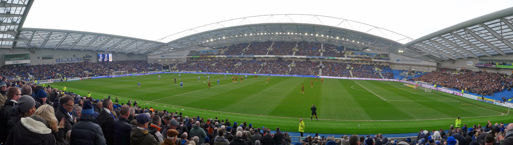

Brighton & Hove Albion Football Club, commonly referred to as simply Brighton, is a professional football club based in Brighton and Hove, East Sussex, England. The club competes in the Premier League, the top tier of English football. The club's home ground is the Falmer Stadium.
Founded in 1901 and nicknamed the "Seagulls" or "Albion", Brighton played their early professional football in the Southern League, when they won their first and still to this date their only major domestic trophy, the FA Charity Shield (later known as FA Community Shield) in 1910 which they won 1–0 over Aston Villa in the final. They were later elected to the Football League in 1920. Between 1979 and 1983, they played in the First Division, and reached the 1983 FA Cup final, losing to Manchester United after a replay. They were relegated from the First Division in the same season.
By the late 1990s, Brighton were in the fourth tier of English football and having financial problems. After narrowly avoiding relegation from the Football League to the Conference in 1997, a boardroom takeover saved the club from liquidation. Successive promotions in 2001 and 2002 brought Brighton back to the second tier, and in 2011, the club moved into the Falmer Stadium after 14 years without a permanent home ground. In the 2016–17 season, Brighton finished second in the EFL Championship and were thus promoted to the Premier League, ending a 34-year absence from the top flight. In the 2022–23 season, Brighton finished sixth in the Premier League, their highest top flight finish ever, and qualified for the UEFA Europa League their first participation in European club football.
List Content
History
Formation and early years (1901–1972)
Brighton & Hove Albion F.C. were founded in 1901 and 19 years later, in 1920, they were elected to the Football League's new Third Division – having previously been members of the Southern League. In the Southern League they won their only national honour to date, the FA Charity Shield, which at that time was contested by the champions of the Southern League, and the Football League, by defeating Football League Champions Aston Villa in 1910. Following their switch to the regionalised division three south in 1921, they remained in this division until the 1957–1958 season, when they won the title and secured promotion to the Second Division at the same time as the regionalised north and south divisions de-regionalised into a third and fourth division for the 1958–1959 season. Albion retained their second tier status until relegation in 1962, suffering a successive relegation in 1963 and slipping into the fourth division for the first time. They won the fourth division title in 1964–1965 and remained in the third division until 1972 when as runners up they secured promotion back to the second division.
Mike Bamber years (1972–1987)
Mike Bamber was the chairman of Brighton from October 1972 until 1983. He famously brought Brian Clough to the club in 1973 and later appointed former England player Alan Mullery as manager. Brighton's life as a Football League club had brought little in the way of success and headlines until 1979, when, under Mullery's management, they were promoted to the First Division as Second Division runners-up. The 1982/83 season saw a wildly inconsistent start for the club, with victories over Arsenal and Manchester United mixed in with heavy defeats. Manager Mike Bailey eventually lost his job at the start of December 1982. Jimmy Melia took over as manager, but was unable to turn the situation around and Brighton, after four seasons in the top flight, were relegated in 1983, finishing in last place.
Despite their relegation, that season Brighton reached their first (and only to date) FA Cup final and drew 2–2 with Manchester United in the first match. Brighton's goals were scored by Gordon Smith and Gary Stevens. The final featured an infamous "miss" by Gordon Smith with virtually the last kick of the game in extra time, prompting the BBC commentator Peter Jones to utter the well-known phrase "...and Smith must score". However, Smith's kick was saved by the Manchester United goalkeeper, Gary Bailey. In the replay, Manchester United won 4–0.
Relegation, last years, and saved by Knight (1987–1997)
After four seasons, relegation to Division Three came in 1987, but the Albion were promoted back the next season. In 1991 they lost the play-off final at Wembley to Notts County 3–1, only to be relegated the next season to the newly named Division Two. In 1996 further relegation came to Division Three. The club's financial situation was becoming increasingly precarious, and the club's directors decided that the Goldstone Ground would have to be sold to pay off some of the club's large debts. Manager Jimmy Case was sacked, after a very poor start to the 1996–97 season left Brighton at the bottom of the league by a considerable margin. The club's directors appointed Steve Gritt, the former joint manager of Charlton Athletic, as manager—Gritt was relatively unknown. Brighton's league performance steadily improved under Gritt, although their improving chances of survival were put under further threat by a two-point deduction by the Football Association, imposed as punishment for a pitch invasion by fans who were protesting against the sale of the Goldstone ground. A lifelong fan named Dick Knight took control of the club in 1997 having led the fan pressure to oust the previous board following their sale of the club's Goldstone Ground to property developers.
By the last day of the season, after being 13 points adrift at one stage, they had risen from the bottom of the division table and had to play the team directly below them, Hereford United, to retain their position in the league. If Brighton won or drew, they would be safe. Brighton defender Kerry Mayo scored an own goal in the first half, and it appeared that Brighton's 77-year league career was over. But a late goal from Robbie Reinelt ensured that Brighton retained their league status, based on number of goals scored (despite Hereford having a better goal difference as, in the Football League at the time, goals scored took precedence), and Hereford's 25-year league run was instead over.
Withdean era and Bloom takeover (1997–2011)
The sale of the Goldstone Ground went through in 1997, leading to Brighton having to play some 70 miles away at Gillingham's Priestfield stadium for two seasons. Micky Adams was appointed Brighton's manager in 1999. For the start of the 1999–2000 season the Seagulls secured a lease to play home games at Withdean Stadium, a converted athletics track in Brighton owned by the local council. 2000–01 was Brighton's first successful season for 13 years. They were crowned champions of Division Three and promoted to Division Two. Adams left in October 2001 to work as Dave Bassett's assistant at Leicester, being replaced by former Leicester manager Peter Taylor. The transition proved to be a plus point for Brighton, who maintained their good form and ended the season as Division Two champions – winning a second successive promotion. Just five years after almost succumbing to the double threat of losing their Football League status and going out of business completely, Brighton were one division away from the Premier League.
In May 2009, Knight was replaced as chairman at Brighton by Tony Bloom, who successfully secured £93 million funding for the new Falmer Stadium and 75% shareholding at the club.
Brighton's final season at Withdean was 2010–11, in which they won League One under the management of Gus Poyet. The following season, Brighton changed their crest to a design similar to the crest used from the 1970s to the 1990s. This was to reflect on the club returning home after not having a stadium since 1997.
Move to new stadium and promotion under Hughton (2011–2017)
The Falmer Stadium hosted its first league match on the opening day of the 2011–12 season against Doncaster Rovers, who were the last opposition to play at the Goldstone in 1997. The game finished 2–1 to Brighton. The 2012–13 season saw Brighton finish 4th and lose in the play-off semi-finals to Crystal Palace. Poyet was suspended as manager following controversial comments made in his post-match interview, and was later sacked as manager and replaced by Óscar García.
On the final day of the 2013–14 season, Brighton beat Nottingham Forest 2–1 with a last minute winner from Leonardo Ulloa to secure a 6th-place finish. After losing to Derby County in the play-offs semi-finals, García resigned. Sami Hyypiä was appointed manager for the 2014–15 season but resigned after just four months due to a poor run of results, replaced by Chris Hughton. In the following campaign Brighton challenged for promotion again, buoyed by a 21-game unbeaten run from the opening day to 19 December. On the final day of the season Brighton travelled to Middlesbrough and needed to win to secure promotion to the Premier League, but a 1–1 draw meant 3rd and a play-off place, where defeat to Sheffield Wednesday was Brighton's third playoff semi-final defeat in four seasons.
Brighton started 2016–17 with an 18-match unbeaten run, taking them to the top of the league for much of December and January. They remained in the automatic promotion positions for most of the rest of the season, and clinched promotion to the Premier League after a 2–1 win against Wigan Athletic at home on 17 April 2017.
Back in the top division (2017–present)
Brighton's first season in the Premier League was largely successful, with the club rising into the top half several times in the season. After being one point above the relegation zone in January, victories over Arsenal and Manchester United in the final months of the campaign helped secure a finish of 15th.
The club endured a difficult second season in the top division, narrowly avoiding relegation with a 17th-place finish. In the FA Cup, Brighton reached the semi-finals for the first time since 1983, losing 1–0 to Manchester City. Hughton was sacked following the end of the season due to the poor run of results.
Following Hughton's sacking, Swansea City manager Graham Potter was appointed as the new head coach on a four-year contract. Potter extended his contract by two more years in November 2019. From March to June 2020, the season was suspended due to the COVID-19 pandemic. Brighton finished 15th and 16th in Potter's first two seasons, securing a historic fifth season in the Premier League in May 2021 that ensured their current spell in the top flight exceeded their previous run from 1979 to 1983.
The club's 2021–22 season saw a ninth-place finish in the Premier League, the highest Brighton had ever finished in English top flight football, with a record tally of 51 points. In September 2022, Potter left the club to become head coach of Chelsea, following the dismissal of Thomas Tuchel.
On 18 September 2022, Brighton announced Roberto De Zerbi as the club's new head coach. The league season was paused for the 2022 FIFA World Cup, in which Brighton midfielder Alexis Mac Allister started and assisted in the final for winning side Argentina. Brighton reached their second FA Cup semi-final in four seasons, losing on penalties to Manchester United following a 0–0 draw. On 21 May 2023, Brighton qualified for European football for the first time in their history with a 3–1 victory over Southampton. Three days later, after a 1–1 draw with Manchester City, Brighton secured qualification for the group stage of the 2023–24 UEFA Europa League. Brighton finished the season with a record tally of 62 points and a new record of sixth-place.
On 14 December 2023, Brighton topped their UEFA Europa League group subsequently qualifying them for the round of 16 by defeating Marseille 1–0. Brighton would be eliminated in the round of 16 by Roma in a 4–1 aggregate loss on 14 March 2024. On 18 May, Brighton and De Zerbi mutually agreed to end his contract at the end of the 2023–24 season as Brighton fell to 11th on the final day of the season with 48 points, leapfrogged by their arch rivals Crystal Palace on goal difference after being ahead all season.
Fabian Hürzeler was appointed as head coach of Brighton & Hove Albion in June 2024, making him the youngest permanent manager in Premier League history at 31 years old. \ Hürzeler replaced Roberto De Zerbi following a successful tenure as manager of FC St. Pauli, where he led the team to promotion back to the top tier of German football after a 13-year absence. His first official match in charge of Brighton was on August 17, 2024, against Everton. Brighton won the match 3-0.
Kit suppliers and Shirt sponsors
| Brighton & Hove Albion Kits | |||||
|---|---|---|---|---|---|
| Period | Kit manufacturer | Shirt sponsor (chest) | Shirt sponsor (sleeve) | Shirt sponsor (back) | Shorts sponsor |
| 1971–1974 | Bukta | None | None | None | None |
| 1974–1975 | Admiral | ||||
| 1975–1977 | Umbro | ||||
| 1977–1980 | Bukta | ||||
| 1980–1983 | Adidas | British Caledonian | |||
| 1983–1986 | Phoenix Brewery | ||||
| 1986–1987 | NOBO | ||||
| 1987–1989 | Spall | ||||
| 1989–1991 | Sports Express | ||||
| 1991–1993 | Ribero | TSB Bank | |||
| 1993–1994 | Sandtex | ||||
| 1994–1997 | Admiral | ||||
| 1997–1998 | Superleague | ||||
| 1998–1999 | Donatello Restaurant | ||||
| 1999–2004 | Erreà | Skint Records | |||
| 2004–2005 | Alive and Kicking Fund | ||||
| 2005–2008 | Donatello Restaurant | Donatello Restaurant | |||
| 2008–2011 | IT First | ||||
| 2011–2013 | BrightonandHoveJobs.com | ||||
| 2013–2014 | American Express | American Express | American Express | ||
| 2014–2017 | Nike | ||||
| 2017–2020 | JD Sports | None | None | ||
| 2020–2024 | Snickers UK | ||||
| 2024– | Experience Kissimmee | ||||
Stadiums
The club's home ground is Falmer Stadium, currently known for sponsorship reasons as the American Express Stadium or simply, the Amex, located in Village Way, Brighton.
On 28 October 2005, the Office of the Deputy Prime Minister announced that the application for Falmer had been successful. Lewes District Council contested John Prescott's decision to approve planning permission for Falmer, forcing a judicial review. This was based on a minor error in Prescott's original approval which neglected to state that some car parking for the stadium is in the Lewes district as opposed to the Brighton & Hove unitary authority. This caused further delay. Once the judicial review ruled in favour of the stadium, Lewes District Council said that it would not launch any further appeals.
Building of Falmer Stadium started in December 2008. On 31 May 2011 the club officially completed the handover and was given the keys to the stadium with an initial capacity of 22,374 seats, signifying the end of 14 years without a designated home. During January 2012, the club submitted an application to Brighton and Hove City council to increase the stadium capacity by a further 8,000 seats as well as to add additional corporate boxes, new television facilities and a luxury suite. This was granted unanimously by Brighton & Hove City Council's planning committee on 25 April 2012. The stadium was then expanded to 27,250 for the start of the 2012–13 season and then further to 27,750 during December 2012 before reaching 30,750 during May 2013.
In 2020, the club submitted plans to expand the stadium from 30,750 seats to 32,500 including additional hospitality. In 2021, the stadium was expanded to 31,800 with additional works yet to be done.
A panorama of the Falmer Stadium In a match
Honours
| Brighton & Hove Albion honours | |||
|---|---|---|---|
| Type | Competition | Titles | Seasons |
| Domestic | Third Division South / Second Division / League One | 3 | 1957–58, 2001–02, 2010–11 |
| Fourth Division / Third Division | 2 | 1964–65, 2000–01 | |
| Southern League | 1 | 1909–10 | |
| FA Charity Shield | 1 | 1910 | |
| Sussex Senior Challenge Cup | 15 | 1942–43, 1987–88, 1991–92, 1993–94, 1994–95, 1999–00, 2003–04, 2006–07, 2007–08, 2009–10, 2010–11, 2012–13, 2016–17, 2017–18, 2021–22 | |
| The Sussex Royal Ulster Rifles Charity Cup | 2 | 1959–60, 1960–61. |
Players
First-team squad
| No. | Pos. | Nation | Player |
|---|---|---|---|
| 1 | GoalKeeper | Netherlands | Bart Verbruggen |
| 2 | Defender | Ghana | Tariq Lamptey |
| 3 | Defender | Brazil | Igor Julio |
| 4 | Defender | England | Adam Webster |
| 5 | Defender | England | Lewis Dunk (captain) |
| 6 | Midfield | England | James Milner |
| 7 | Midfield | England | Solly March |
| 8 | Midfield | Germany | Brajan Gruda |
| 9 | Forward | Brazil | João Pedro |
| 11 | Midfield | Ivorian | Simon Adingra |
| 14 | Forward | France | Georginio Rutter |
| 17 | Midfield | Gambia | Yankuba Minteh |
| 18 | Forward | England | Danny Welbeck |
| 20 | Midfield | Cameroonian | Carlos Baleba |
| No. | Pos. | Nation | Player |
|---|---|---|---|
| 22 | Midfield | Japan | Kaoru Mitoma |
| 23 | GoalKeeper | England | Jason Steele |
| 24 | Defender | Turkey | Ferdi Kadıoğlu |
| 25 | Midfield | Paraguayan | Diego Gómez |
| 26 | Midfield | Swedish | Yasin Ayari |
| 27 | Midfield | Netherlands | Mats Wieffer |
| 28 | Forward | Ireland | Evan Ferguson |
| 29 | Defender | Netherlands | Jan Paul van Hecke |
| 30 | Defender | Ecuadorian | Pervis Estupiñán |
| 33 | Midfield | Danish | Matt O'Riley |
| 34 | Defender | Netherlands | Joël Veltman |
| 39 | GoalKeeper | England | Carl Rushworth |
| 41 | Midfield | England | Jack Hinshelwood |
| - | Defender | Ireland | Eiran Cashin |
Management and staff
Current staff
| Position | Name |
|---|---|
| Manager | Fabian Hürzeler |
| Assistant coaches | Jonas Scheuermann |
| Andrew Crofts | |
| Daniel Niedzkowski | |
| Goalkeeping coach | Jack Stern |
| Marco Knoop | |
| Academy manager | Ian Buckman |
| Head of sports medicine and performance | Florian Pfab |
| Managing director | David Weir |
| Chief commercial officer | Russell Wood |
| Chief financial officer | Anna Easthope |
| Director of football operations | Paul Mullen |
Brighton & Hove Albion board
| Position | Name |
|---|---|
| Chairman | Tony Bloom |
| Co-chair | Paul Brown |
| Executive Vice-chair | Paul Barber |
| Director | Lee Cooper |